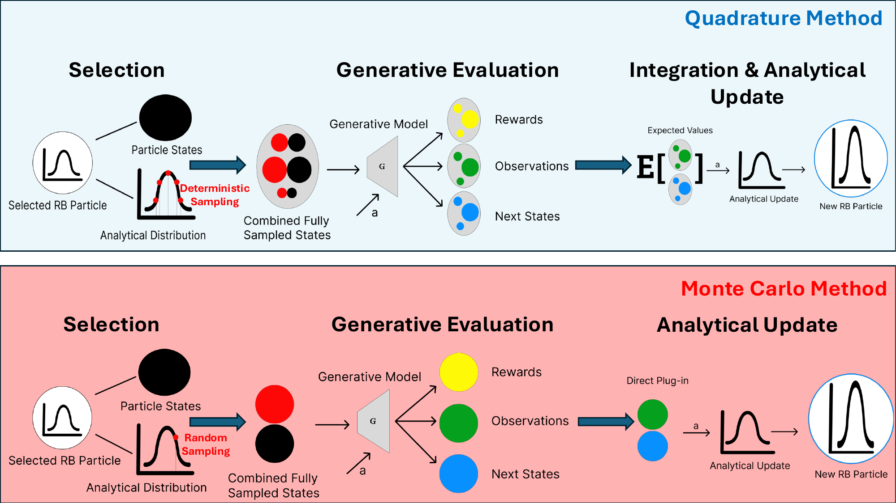
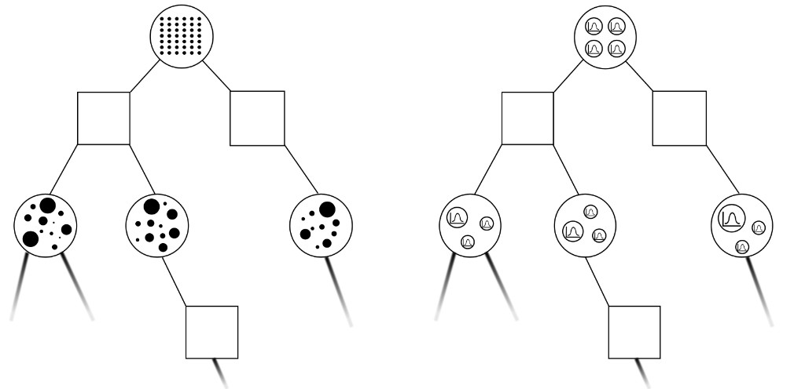

Research
My research sits at the intersection of probabilistic inference, decision-making under uncertainty, and machine learning, with the goal of enabling autonomous systems to operate reliably in complex, partially observable environments. I am particularly interested in combining the principled structure of classical estimation and planning methods with the adaptability of modern learning approaches.
Publications

Robots operating in the real world must make decisions based on incomplete and noisy observations — a setting formally captured by Partially Observable Markov Decision Processes (POMDPs). While sampling-based POMDP solvers are flexible, their performance degrades in high-dimensional state spaces due to the variance inherent in Monte Carlo estimation. This work extends the Rao-Blackwellized POMDP (RB-POMDP) framework to support arbitrary analytically tractable belief components through hybrid continuous-discrete state representations. By analytically propagating uncertainty for structured parts of the state during tree-based planning, the approach substantially reduces sampling variance — achieving higher cumulative rewards with far fewer particles than purely sampling-based methods. We validate the framework on a robotic search-and-rescue task by integrating it with FastSLAM 2.0, where the agent must simultaneously localize itself and locate victims under partial observability.

Partially Observable Markov Decision Processes (POMDPs) provide a structured framework for decision-making under uncertainty, but practical deployment depends on efficient belief updates and scalable online planning. This paper introduces Rao-Blackwellized POMDP (RB-POMDP) approximate solvers and a new RB-POMCPOW planner that combines analytical filtering with quadrature-based integration to reduce variance in both estimation and value computation. In a GPS-denied localization task, the proposed approach improves planning quality and computational efficiency compared to standard particle-filter-based POMCPOW under matched computational limits.